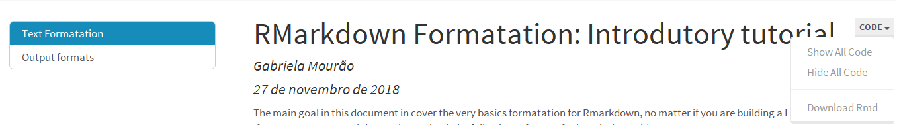
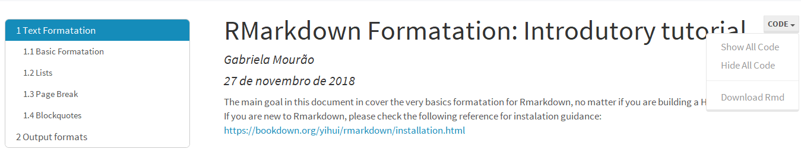
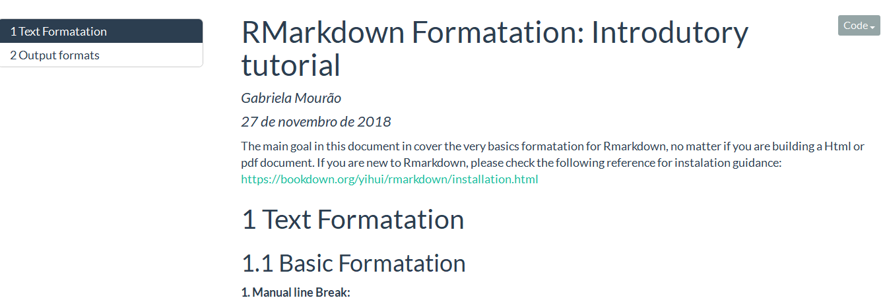
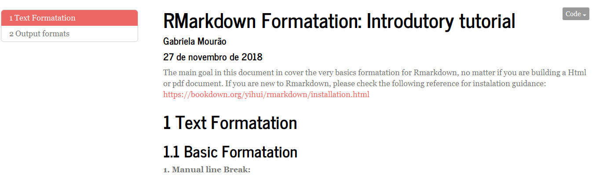
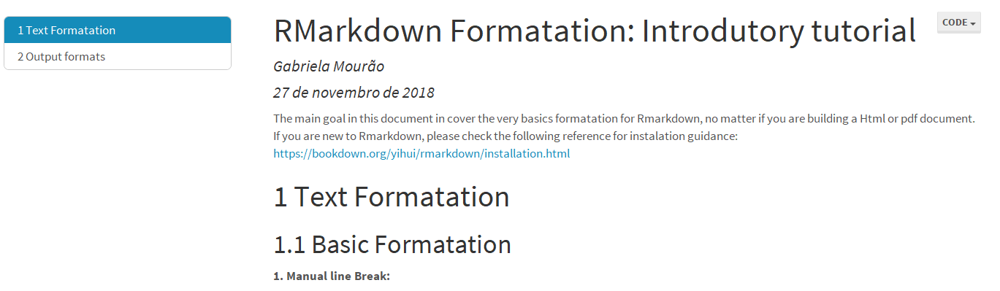
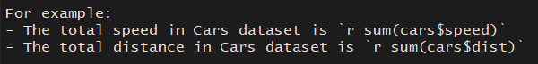

Introductory Tutorial on Rmarkdown
Rmarkdown is a super useful package in R! It enables the creation of reports in different formats like word, pdf, html, and others; all of them very neat and professional. I also like to use it in small projects, since it is possible to comment all steps in a very organized way, besides that you can even develop your own theme and the results are awesome!
I decided to make this tutorial to help those who are new to Rmarkdown, making it very straightforward to the features that I use most, so one can start using all the awesome options of this package that makes our lives much easier right away! Besides that, it can also work to refresh our minds, since there are many useful options that might be forgotten because we don’t use very often, but in some contexts, they really make difference (for example, the cache option that makes the knit process faster when we are dealing with heavy outputs).
If you are new to Rmarkdown, please check the following reference for installation guidance: https://bookdown.org/yihui/rmarkdown/installation.html
And by the way, for those who are not new to Rmarkdown, but want more information about it, the Bookdown is the definitive guide! And I highly recommend you to check it out.
I hope you find this tutorial helpful! And let me know your feedback about it! Cheers!!
Text Formatation
Basic Formatation
a. Manual line Break
To add a line break, you can type two or more spaces in the end of the line or use the break tag (<br>).
b.Headers type
# Header 1 ## Header 2 ### Header 3
c.Text Emphasis
- Italic Format
- Bold Format
- Subscript1
- Superscript1
*Italic* or _italic_
**Bold** or __Bold__
Subscript~1~
Superscript^1^Lists
a. Ordered list
1. First Element
2. Second Element
+ Nested Element
+ Another Nested Elementb. Unordered list
* Text
* Another text
+ Nested text
- Other option for list
+ Again nested text
Page Break
To add a page break, as the example above, you can simply type four or more dashes or stars:
------ or
******
Blockquotes
a. Plain Code Block
Since the beginning of this session I am using this option to show how to apply each formatting introduced up to now. Using this it is possible to write some code in a fixed-width box without evaluating it:
```
This text is displayed as it is **typed!**
```b. Blockquotes
Can be used to add some quotes in your markdown file, as in the following example.
“No medicine cures what happiness cannot”
Gabriel Garcia Marques
:)
> No medicine cures what happiness cannot
> *Gabriel Garcia Marques*
> :)
Output formats
There are several outputs formats available in Markdown:
- beamer_presentation
- github_document
- html_document
- ioslides_presentation
- latex_document
- md_document
- odt_document
- pdf_document
- powerpoint_presentation
- rtf_document
- slidy_presentation
- word_document
Up to now, this tutorial has been focusing on some basic markdown syntax in a more generic way. So let’s now focus on some options for the html_document output.
If you type ?rmarkdown::html_document in your R console, you can get a list of all options for HTML document. Below you can find the ones that I use more frequently in my projects and I consider more important:
- code_folding: Enable document readers to toggle the display of R code chunks. Specify “none” to display all code chunks (assuming they were knit with echo = TRUE). Specify “hide” to hide all R code chunks by default (users can show hidden code chunks either individually or document-wide). Specify “show” to show all R code chunks by default.
- toc: to include a table of contents in the output
- toc_depth: Depth of headers to include in table format
- toc_float: TRUE to float the table of contents
- Code_download: Embeded the Rmd source code within the document and provide a link that can be used by readers to download the code.
- number_sections: TRUE to number section headings
- self_conteained: Produce a standalone HTML file with no external dependencies.
Usage examples:
Following you can find some usage examples of the mentioned options:
html_document:
code_folding: show
toc: yes
toc_depth: 1
toc_float: yes
code_download: yes
highlight: haddock
theme: lumen
Including section number:
output:
html_document:
code_folding: show
toc: yes
toc_depth: 2
toc_float: yes
code_download: yes
number_sections: true
highlight: haddock
theme: lumen

There are many themes available in Rmarkdown package, my preferred ones are: Flatly, Journal and Lumen.
Flatly theme:

Journal theme:

Lumen theme:

Code
Echo Options
To insert some codes in the markdown document, the called code chunk, it is necessary to add three backticks like followed by {r}, where r indicates the language. To close the code chunk, add another three backticks in the end. Other option is using the shortcut Ctrl + Alt + i or if you are using R-Studio simply go to insert -> R and the chunk code will be added for you.
summary(cars)
## speed dist
## Min. : 4.0 Min. : 2.00
## 1st Qu.:12.0 1st Qu.: 26.00
## Median :15.0 Median : 36.00
## Mean :15.4 Mean : 42.98
## 3rd Qu.:19.0 3rd Qu.: 56.00
## Max. :25.0 Max. :120.00It is possible to control the code output adding some chunk options inside the curly braces: {r }. Following, you can find some useful options that I use very frequently:
- eval: TRUE to evaluate the code chunk
- echo: TRUE to show the code in the output document
- results: If “hide” the text output will be hidden, “asis” for write a text as is.
- collapse: TRUE to merge output text and the code into a single code block in the output.
- Warning, message and error: Whether to show warnings, messages and error in the output document
- include: When include = FALSE, the whole code chunk is excluded in the output, but note that it will still be evaluated if eval = TRUE.
- cache: If caching is enabled, the same code chunk will not be evaluated the next time the document is compiled (if the code chunk was not modified), which can save you time.
- fig.width and fig.height: The (graphical device) size of R plots in inches. Ex: fig.width = 6 and fig.height = 4 or fig.dim = c(6, 4).
- out.width and out.height: The output size of R plots in the output document. These options may scale images. You can use percentages, e.g., out.width = ‘80%’ means 80% of the page width.
- fig.align: The alignment of plots. It can be ‘left’, ‘center’, or ‘right’.
- fig.cap: To include some figure caption.
For a better understanding of how those options works, let’s take a look into some practical examples as follow:
- {r, include = FALSE}
- Code not shown
- results not shown
- Code not shown
- {r, echo = FALSE}
- Code not shown
- results shown
## speed dist
## Min. : 4.0 Min. : 2.00
## 1st Qu.:12.0 1st Qu.: 26.00
## Median :15.0 Median : 36.00
## Mean :15.4 Mean : 42.98
## 3rd Qu.:19.0 3rd Qu.: 56.00
## Max. :25.0 Max. :120.00- {r, results = ‘hide’}
- Code shown
- Results not shown
- Code shown
summary(cars)- {r, collapse=TRUE}
- To merge the code and the output
summary(cars)
## speed dist
## Min. : 4.0 Min. : 2.00
## 1st Qu.:12.0 1st Qu.: 26.00
## Median :15.0 Median : 36.00
## Mean :15.4 Mean : 42.98
## 3rd Qu.:19.0 3rd Qu.: 56.00
## Max. :25.0 Max. :120.00- {r, out.width=‘30%’, fig.align=‘center’, fig.cap=‘Amazing Hong Kong’}
- Another option for including images and captions.
knitr::include_graphics('img/timon-studler-49992-unsplash.jpg')Figure 1: Amazing Hong Kong
- {r, fig.align=‘center’, fig.width = 6, fig.height=4}
- It is possible to adjust the graph size as well its alignment in the output document
ggplot(cars, aes(x=speed, y=dist)) +
geom_point(alpha=1) +
labs(title = "Speed vs. Distance", x = "Speed", y = "Distance") +
theme_bw()
There are many options available for control the Code Chunk output, if you want more information about it, the following links are very good references:
https://yihui.name/knitr/options/
https://bookdown.org/yihui/rmarkdown/r-code.html
https://www.overleaf.com/learn/latex/Positioning_images_and_tables
Inline Code
If you wants to add just a small code expression in the markdown text, just add one backticks before and another one after the code expression.
For example:
- The total speed in Cars dataset is 770
- The total distance in Cars dataset is 2149

Formulas
Inline and display mode
If you are typing just a small formula, you might just want to add it in the line that you are typing. for example: “This is an inline example formula: \(E=mc^2\)”
"This is an inline example formula: $E=mc^2$"
But, if you are typing a very long expression, you might think that is better to use the display mode:
$$a^n + b^n = (a - b)(a^{n-1} + a^{n-2}b + a^{n-3}b^2 + ... + ab^{n-2} + b^{n-1})$$
$$a^n + b^n = (a - b)(a^{n-1} + a^{n-2}b + a^{n-3}b^2 + ... + ab^{n-2} + b^{n-1})$$
Symbols:
Some useful symbol formatations:
| Symbol | Latex | Comment |
|---|---|---|
| \(\pm\) | \pm |
plus or minus |
| \(\div\) | \div |
divided by |
| \(\times\) | \times |
times |
| \(\ge\) | \ge |
greater or equal |
| \(\le\) | \le |
less or equal |
| \(\forall\) | \forall |
For all |
| \(\ne\) | \ne |
Not equal |
| \(\sim\) | \sim |
is similar to |
| \(\in\) | \in |
is member of |
| \(\mathbb{R}\) | \mathbb{R} |
Set of real numbers |
| \(\hat{y}\) | \hat{y} |
y hat |
| \(\bar{y}\) | \bar{y} |
y bar |
Greek Letters
| Symbol | Latex | Comment |
|---|---|---|
| \(\alpha\) | \alpha |
alpha |
| \(\beta\) | \beta |
beta |
| \(\Delta~and~\delta\) | \Delta and \delta |
Delta |
| \(\epsilon~and~\varepsilon\) | \epsilon and \varepsilon |
epsilon |
| \(\Gamma~and~\gamma\) | \Gamma and \gamma |
Gamma |
| \(\pi\) | \pi |
pi |
| \(\Sigma~\sigma~\varsigma\) | \Sigma \sigma \varsigma |
Sigma |
Index
\[ \begin{align} x_i, x_{i} && \text{(Subscript)}\\ x^2 && \text{(Superscript)}\\ x^2_i,~x^2_{i,j} && \text{(Combined)}\ \end{align} \]
x_i, x_{i} (Subscript)
x^2 (Superscript)
x^2_i, x^2_{i,j} (Combined)
Expressions
Square roots
To indicate a square root, use \sqrt: \(\sqrt{x}\)
$\sqrt{x}$
Fractions
The fractions are displayed using \frac symbol:
\(x=\frac{1}{1+e^{\beta_0+\beta_{1}\times y}}\)
or adding a parantesis:
\(x=\left(\frac{1}{1+e^{\beta_0+\beta_{1}\times y}}\right)\)
$x=\frac{1}{1+e^{\beta_0+\beta_{1}\times y}}$
$x=\left(\frac{1}{1+e^{\beta_0+\beta_{1}\times y}}\right)$
Summation expression
To add a summation sign, you can use \sum and combine it with the index syntax introduced above: \(\sum_{i=1}^n(y_i-\hat{y})^2\)
$\sum_{i=1}^n(y_i-\hat{y})^2$
Others
\[\int_0^{a} x^k~dx\]
$$\int_0^{a} x^k~dx$$
\[ \frac{\partial u}{\partial t} = h^2 \left( \frac{\partial^2 u}{\partial x^2} + \frac{\partial^2 u}{\partial y^2} + \frac{\partial^2 u}{\partial z^2} \right) \]
$$ \frac{\partial u}{\partial t}
= h^2 \left( \frac{\partial^2 u}{\partial x^2}
+ \frac{\partial^2 u}{\partial y^2}
+ \frac{\partial^2 u}{\partial z^2} \right) $$\[\lim_{x \to +\infty} \frac{3x^2 +7x^3}{x^2 +5x^4} = 3\]
$$\lim_{x \to +\infty} \frac{3x^2 +7x^3}{x^2 +5x^4} = 3$$Matrices
\[\mathbf{X} = \left[\begin{array} {rrr} 2 & 4 & 6 \\ 8 & 10 & 12 \\ 14 & 16 & 18 \end{array}\right]\]
$$\mathbf{X} = \left[\begin{array}
{rrr}
2 & 4 & 6 \\
8 & 10 & 12 \\
14 & 16 & 18
\end{array}\right]$$
For operations with matrix you can also use \(\mathbf{y}=\mathbf{X}\beta\), for example.
$\mathbf{y}=\mathbf{X}\beta$
Alignment and comments:
You can use “~” to add some spaces in the formula: \[ x_{i} + y_{i} \ge 0 ~~~~~~~\forall~i \in \mathbb{R} \]
$$ x_{i} + y_{i} \ge 0 ~~~~~~~\forall~i \in \mathbb{R} $$
The formula inserted in “index” topic, wasn’t completely shown at that time. To write formulas together with comments, is necessary to use the following syntax:
$$
\begin{align}
x_i, x_{i} && \text{(Subscript)}\\
x^2 && \text{(Superscript)}\\
x^2_i,~x^2_{i,j} && \text{(Combined)}\
\end{align}
$$
Besides that, when solving large expressions, might be useful to use some alignment:
\[\begin{align} 5\times a~+~10 &=30 \\ 5\times a &= 20 \\ a &= 4 \end{align}\]
$$\begin
5\times a~+~10 &=30 \\
5\times a &= 20 \\
a &= 4
\end$$
Links
To insert hyperlinks, you can type: R-studio or https://www.rstudio.com
[R-studio](https://www.rstudio.com)
or
https://www.rstudio.com
Images
For images, the syntax is very similar to links:
^[photo by timon studler on unsplash]
Tables
Inserting manual tables in Rmarkdown is very easy:
| Number Section | Section Name |
|---|---|
| 1.0 | Text Formatation |
| 2.0 | Output formats |
| 3.0 | Code options |
| 4.0 | Formulas |
| 5.0 | Links |
| 6.0 | Images |
| 7.0 | Tables |
|Number Section|Section Name|
|:---:|:---:|
|1.0|Text Formatation|
|2.0|Output formats|
|3.0|Code options|
|4.0|Formulas|
|5.0|Links|
|6.0|Images|
|7.0|Tables|
References
Following are the references used in this tutorial. They are very complete and useful, I sugest that you check it for more informations about Rmarkdown.
https://bookdown.org/yihui/rmarkdown/ https://oeis.org/wiki/List_of_LaTeX_mathematical_symbols http://www.math.mcgill.ca/yyang/regression/RMarkdown/example.html https://gist.github.com/derekmcloughlin/896da22518ef2f3d81b0 https://www.maths.tcd.ie/~dwilkins/LaTeXPrimer/Calculus.html
Thank you! :)
photo by timon studler on unsplash↩